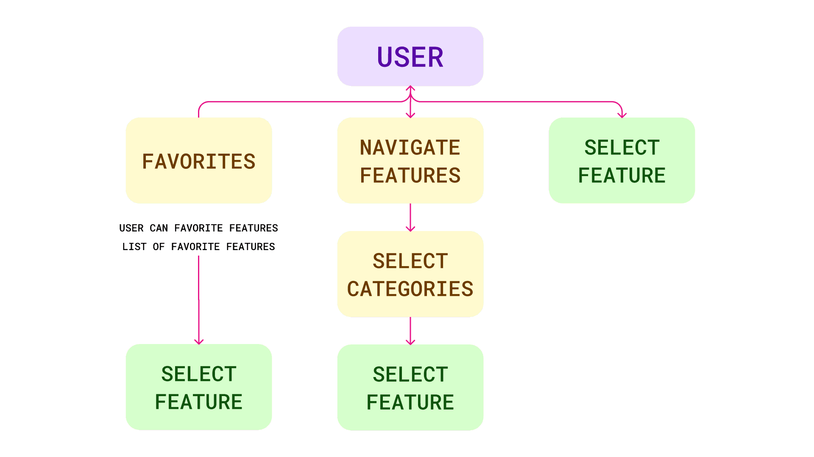
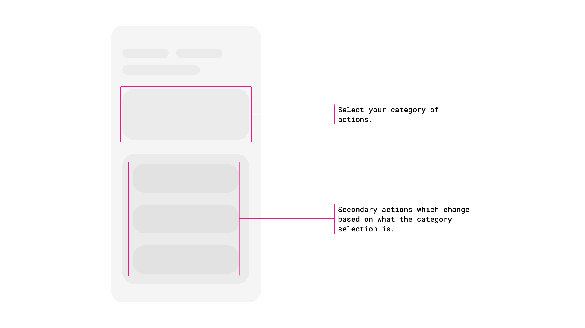
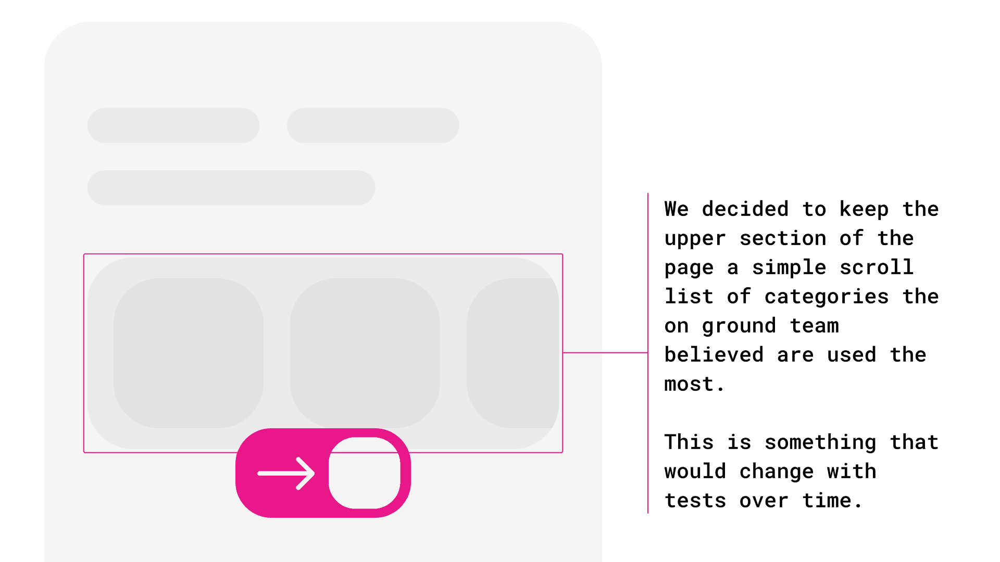
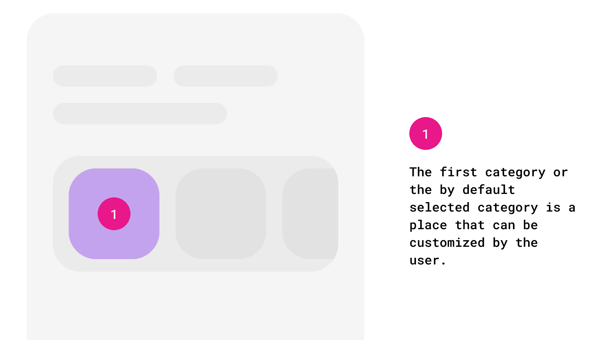
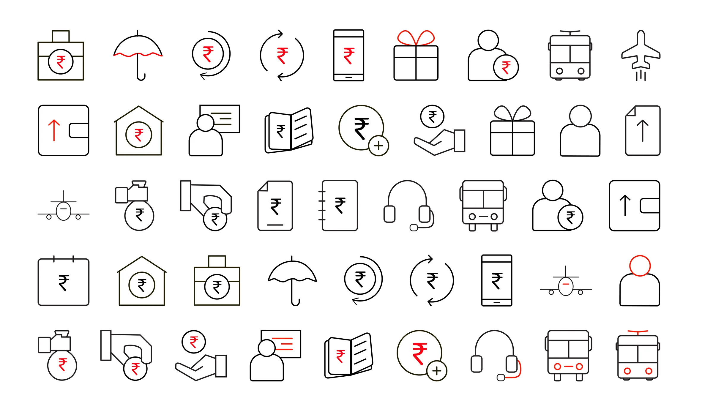

← Case Studies(05 / 14)
Airtel
Desiging for tech with lower power
UX DesignResearchicon SystyemsAccessibility
Not everyone like's to read to much nowadays (thanks TikTok). See a comic strip?
TimelineMay 2019 - Jun 2019
RoleProduct Designer, Buses & Cabs
ToolsIllustrator · Adobe XD
Faster Feature Discovery14%
Merchants Served1M+
Features Reorganized60+
Custom Icons Created100+

The Problem
The merchant app had 60+ features that people used regularly. All of them were on the home screen, because nobody had decided what mattered more than anything else.
Worse: it had been designed for desktop. The actual users were shopkeepers on low-powered Android phones with small screens, many with limited formal education, using this between serving customers not sitting at a desk. Dense desktop UI, tiny screens, text-heavy navigation, low reading comfort. Every constraint pointing the same way.
Research
Collaboration with Research Team
Colleagues had already collected field data on how merchants used the platform. I dug into it for what was used most, what was dead weight, and whether anyone customised anything. Mostly they didn't.
Journey Mapping
Do they search? Browse categories? Set favourites? Range widely or return to the same few things?
Key Learning
The finding that shaped everything: most merchants use two or three features constantly and almost nothing else.

The decision
The tempting move was to surface the top features and bury the rest. I didn't ; "the rest" still mattered to someone, and a feature used by 5% of a million merchants is fifty thousand people. I also stuck tightly to company design standards rather than inventing a new visual language. In an app handling people's money, familiarity is trust.
What I built
Choice vs Discovery
Favourites and recently-used pinned to the top, then categories acting as filters over a running list, not folders you enter and exit. A merchant who only ever uses two things never navigates at all. Someone hunting across categories moves across categories rather than scanning all options



01 / 03
Iconography over text
A distinct style was created for an audience that is not very education plus every merchant talks in a different language. Icons were considered universally easy to understand and 100+ custom icons were created to represent sections of the application.

The result
Faster Feature Discovery14%
With a measurable drop in support load.
NOTE FROM FUTURE SAMARTH
Looking back at these icons I'm worried about scalability. Would they translate to phone screens with super small zoomed-out content? I designed them at a comfortable size on a comfortable screen; which is exactly the mistake the original desktop-first app made. I should have considered talking to the design system team to understand the reasons behind such choices.